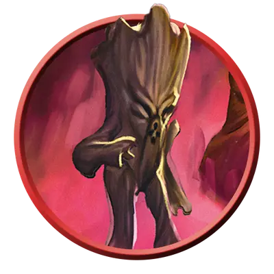

Росток миконида
Myconid Sprout
Маленькое Растение, Принципиальное Нейтральное

Класс Защиты 10 Инициатива +0 (10)
Хиты 3 (1к6)
Скорость 10 футов
| мод | спас | ||
|---|---|---|---|
| СИЛ | 8 | −1 | −1 |
| ЛОВ | 10 | +0 | +0 |
| ТЕЛ | 10 | +0 | +0 |
| мод | спас | ||
|---|---|---|---|
| ИНТ | 8 | −1 | −1 |
| МДР | 11 | +0 | +0 |
| ХАР | 5 | −3 | −3 |
Чувства Тёмное зрение 120 футов, пассивное Восприятие 10
Языки Телепатия 240 фт.
Опасность 0 (10 опыта; БВ +2)
Особенности
Слабость на солнце. Находясь на солнечном свету, миконид совершает с Помехой все Тесты к20. Миконид умирает, если проводит больше 1 часа под прямыми солнечными лучами.
Действия
Удар. Бросок рукопашной атаки: +1, досягаемость 5 фт. Попадание: 1 (1к4 - 1) Дробящего урона плюс 2 (1к4) урона Ядом.
Споры связи. От миконида расходятся споры 30-футовой Эманацией с центром на нём. Каждое существо в этой области, не являющееся Конструктом, Элементалем или Нежитью, и чьё значение Интеллекта равно 2 или больше, получает телепатию дальностью 30 футов на 1 час.
Бонус мастерства +2
Среда обитания Подземье
Сокровища Любые
Микониды
Переносчики спор
Микониды обитают в отдалённых глубинах Подземья, где разрастается плесень и грибы. Эти ходячие грибные создания заботятся о своих святилищах и стараются не втягивать себя в распри иных народов. Для общения, тревожных сигналов и самозащиты они используют особые споры. Когда микониды встречают других созданий, они выпускают споры мыслесвязи, что позволяют всем поблизости телепатически делиться мыслями. И всё же намерения миконидов остаются загадкой для большинства тех, кто не принадлежит к грибному роду.
Ростки миконидов ухаживают за своими грибными домами и высматривают незваных гостей.